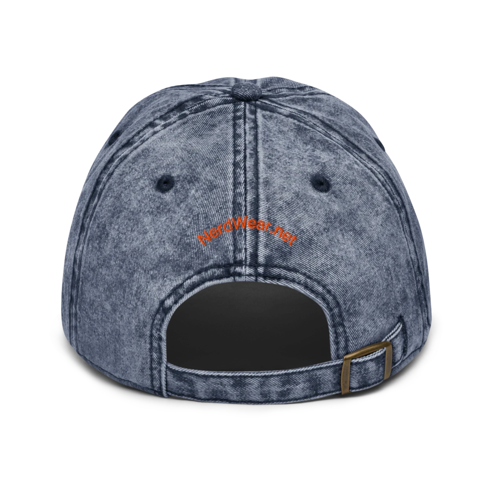

01
The Question-Asker
The one most likely to ask, “Are we sure?”
NerdWear is a four-person project built around ideas, details, questions, and rabbit holes. We are not the point of the brand. The tribe is.

No founder photos. No personality cult. Just four recurring ways of looking at an idea until it either becomes NerdWear or gets cut.
The one most likely to ask, “Are we sure?”
Drawn to numbers, systems, relationships, formulas, and hidden connections.
The practical voice that turns an interesting idea into a real product someone would actually want to wear.
The final check: not merely “Is it clever?” but “Would we actually wear it?”
We wanted smarter merch. So we started making it.
Too much “nerd merchandise” treats the subject as a novelty first and the product second. We wanted to reverse that.
The hat should be something you genuinely want to wear. The embroidery should look intentional. The colors and material should work on their own. Then the Expression adds another layer: meaning, recognition, identity, and sometimes a quiet connection with the person who understands it.

Thread has depth. It catches light. It interacts with washed cotton, structured crowns, vintage textures, beanies, snapbacks, and different hat colors in a way a flat graphic does not.
That physical quality is important to us because NerdWear should never feel like an equation was dropped onto the cheapest available merchandise. A good Expression deserves a good object.
Anonymity is not meant to manufacture mystery. It keeps the focus where we want it: on the ideas, the Expressions, and the people who recognize themselves in them.
If you correct the formula on the whiteboard, spot the edge case, rewrite code because it could be cleaner, read the footnote, question the assumption, optimize the build, or simply refuse to stop being curious, you are already part of the NerdWear story.

A line. A symbol. A formula. A phrase someone recognizes from ten feet away. Headwear is a natural place for the kind of concise intellectual signals NerdWear is built around. So that is where we are starting.
Drinkware is next. Other useful objects may follow. The category can grow. The rule stays the same: the Expression has to deserve the space.